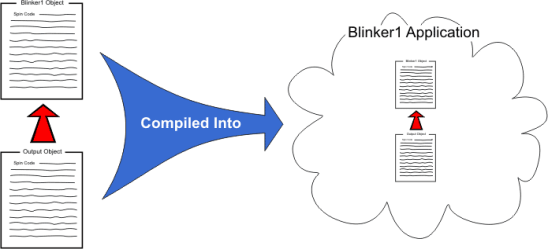

Now let’s explore the power of objects. All of the preceding exercises created an application that contained only one object; the Output.spin object is the entire application. This is typical of how new objects begin their development.
Suppose that the motivation behind all this work was really to create a "building block" object that other developers could use to easily toggle one or more I/O pins. That's what we'll do next.
It's time to make our Output object easily interface with other objects.

{{ Output.spin }} Toggle two pins, simultaneously.}}
VAR long Stack[9] 'Stack space for new cog
PUB Main
cognew(Toggle(16, 3_000_000, 10), @Stack) 'Toggle P16 ten times, 1/4 s each
Toggle(17, 2_000_000, 20) 'Toggle P17 twenty times, 1/6 s each
PUB Start(Pin, Delay, Count) {{Start new toggling process in a new cog.}}
cognew(Toggle(Pin, Delay, Count), @Stack)
PUB Toggle(Pin, Delay, Count)
{{Toggle Pin, Count times with Delay clock cycles in between.}}
dira[Pin]~~ 'Set I/O pin to output direction
repeat Count 'Repeat for Count iterations
!outa[Pin] ' Toggle I/O Pin
waitcnt(Delay + cnt) ' Wait for Delay cycles
Here we replaced the Main method with a Start method. The Start method activates another cog to run the Toggle method independently and passes along the Pin, Delay, and Count parameters.
The interface to an object is made up of its public (PUB) methods, so our Output object now has two interface components, the Start method and the Toggle method.
Now our Output object can be used by other objects to toggle any pin at any rate for any number of times they want. They can also choose to do this serially, by calling Output’s Toggle method, or in parallel with other tasks, by calling Output’s Start method.
Let’s create another object that uses Output.spin.
{{ Blinker1.spin }}
OBJ LED : "Output"
PUB Main
{Toggle pins at different rates, simultaneously}
LED.Start(16, 3_000_000, 10)
LED.Toggle(17, 2_000_000, 20)
The LEDs should have blinked in the same way they did in Exercise 4-2, but a different technique was used by the code; Blinker1 used our Output object and simply called Output’s Start and Toggle methods.
Here’s how it worked. In Blinker1 we have an object block (OBJ) and a public method (PUB). The object block’s LED : "Output" line declares that we're going to use another object called Output and that we’ll refer to it as LED within this Blinker1 object.
In the public method, Main, we have two method calls. Remember how we learned in Exercise 4-1 that one method can call another just by referencing its name? That works for methods that are in the same object, but now we need to call a method that is in another object. To do this, we use the form object . method where object is the symbolic name we gave the object in the OBJ block (LED in this case) and method is the name of that object’s method. This is called an Object-Method reference. Blinker1.spin refers to the Output object as LED, so LED.Start calls Output’s Start method, and LED.Toggle calls Output.spin’s Toggle method.
When Blinker1 is compiled, since it references Output, the two objects get compiled into one application. This structure is also shown in the Object View, which we'll learn about next.

Blinker1 Hierarchy and Blinker1 Application
Propeller Help Version 1.2
Copyright © Parallax Inc., dba Parallax Semiconductor
6/17/2011